Black Network
A Libertos Black Network surgiu assim, inspirada pela Unicamp Black Network, de São Paulo, e movida por uma questão simples:
de quem já está lá
para o cenário nacional
em oportunidade

Tudo começou no Clube dos Libertos, nosso espaço de letramento racial e aquilombamento, que segue firme e ativo.
A Libertos Black Network é o passo seguinte: aproximar esses estudantes de profissionais e empresas, e abrir caminhos concretos de carreira.
iniciativa Libertos Black Network
Se você quer viver a universidade indo além da sala de aula, vem com a gente. Talento existe, o acesso é que precisa ser ampliado.
Black Network
A Libertos Black Network surgiu de um grupo de jovens negros do Nordeste, inspirados pela Unicamp Black Network, de São Paulo, que queriam mudar uma realidade: o acesso a oportunidades de todo o Brasil e a chance de conversar com profissionais experientes. Somos uma rede que conecta universitários, profissionais e empresas. Conectamos universitários negros do Nordeste a profissionais negros de todo o Brasil, ampliando caminhos e fortalecendo novas lideranças. Aqui a gente acredita em crescer junto. Criamos espaços de encontro, troca e desenvolvimento — online e presenciais — que aproximam estudantes de quem já está no mercado. Tudo começou no Clube dos Libertos, nosso espaço de letramento racial e aquilombamento, que segue firme e ativo. A rede é o passo seguinte: aproximar esses estudantes de profissionais e empresas, e abrir caminhos concretos de carreira. Talento existe. O acesso é que precisa ser ampliado. Se você quer viver a universidade indo além da sala de aula, esse espaço também é seu. #LibertosBlackNetwork #ClubeDosLibertos #ProfissionaisNegros #Nordeste #JuventudeNegra #Networking #CarreiraNegra
Black Network
BLACK
NETWORK

Um dia em que universitários negros de todo o Nordeste ocupam o mesmo espaço que profissionais negros que já estão dentro do mercado.
Mesas de troca, conversas de carreira e contatos que continuam depois que as cadeiras são guardadas.
Data, programação e inscrições saem por aqui. Ative as notificações e vem com a gente.
Black Network
O que é o Encontro Libertos Black Network? É o nosso momento presencial. O dia em que a rede sai da tela e senta na mesma sala: universitários negros de todo o Nordeste e profissionais negros de todo o Brasil, no mesmo espaço. Ali acontece mesa de troca por área de carreira, conversa direta com quem já está no mercado e com empresas que querem contratar — e contato que continua depois que as cadeiras são guardadas. A primeira edição acontece em Salvador. Em 2027, o Encontro muda de estado, e segue rodando o Nordeste inteiro. Cada nova cidade é mais gente na rede. E ninguém sai dela depois. Porque a ideia não é fazer um evento. É construir o Nordeste negro conectado. Data, programação e inscrições saem por aqui. Ative as notificações e vem com a gente. #EncontroLibertosBlackNetwork #LibertosBlackNetwork #Salvador #Nordeste #ProfissionaisNegros #JuventudeNegra #Networking #Carreira